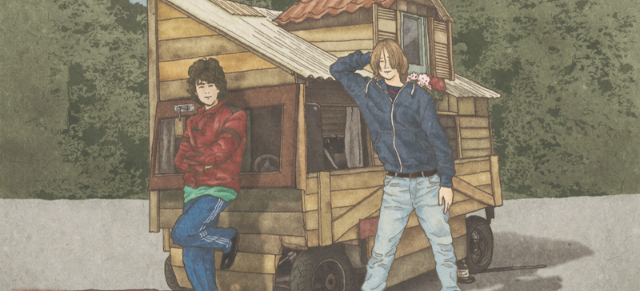

THINGS FOR BETTER LIFE
お取り寄せの楽しみ。

記事はこちら
箱を開けると、そこに幸せが。
平野紗季子さんが語るお取り寄せの魅力。
記事はこちら
「最古（笑）は10年前ぐらい、大学生のときです。『チネカ』という物語性のあるお菓子を作る...
昔ながらの優しい味わいのおかずを詰めたお弁当が人気の麻生要一郎さん。最近はお弁当...
「食べ物が届くという現象にファンタジーを感じる人間だと思いました」。確かに。ホント素敵なことだ...
『チネカ』という物語性のあるお菓子を作るクリエイターの、猫のカリカリを模したクッキーが始まり...
記事はこちら
「食べ物が届くという現象にファンタジーを感じる人間だと思いました」。確かに...
平野さんではないが、すべての運送関係者にも「ありがとう」である。流通のさらなる進化...
自分が動かなくても手に入る。お店に行く時間も手間もいらない。待ち時間ゼロで、指定の日...
「お取り寄せの一番のハードルは、実は送料だと思います。カートに入れたあとに送料が追加に...